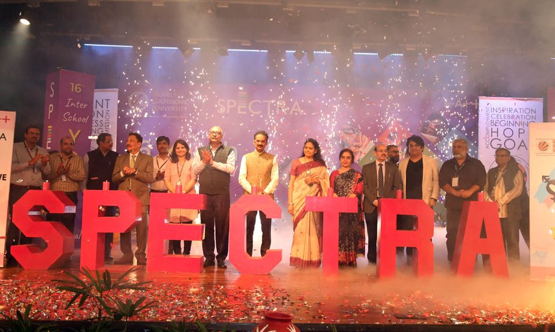
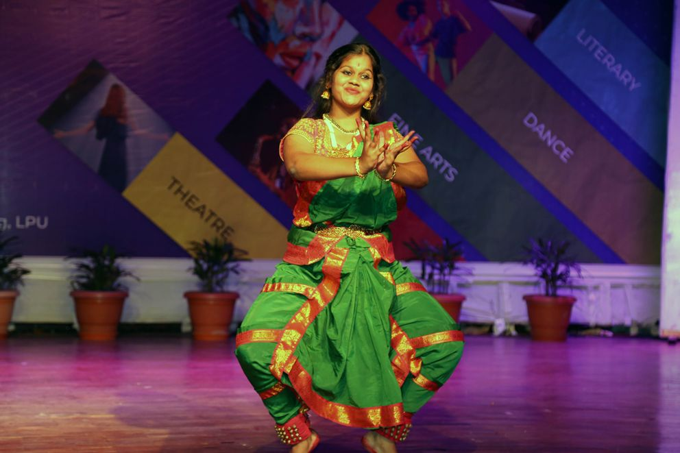
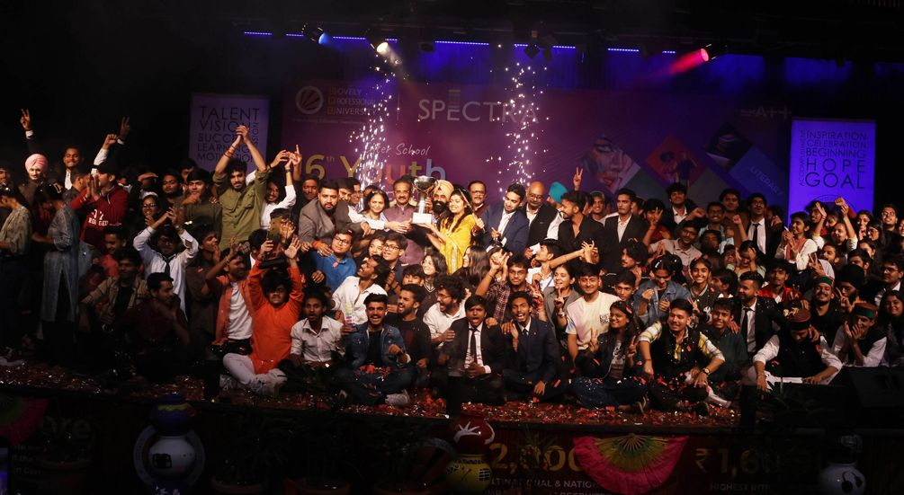
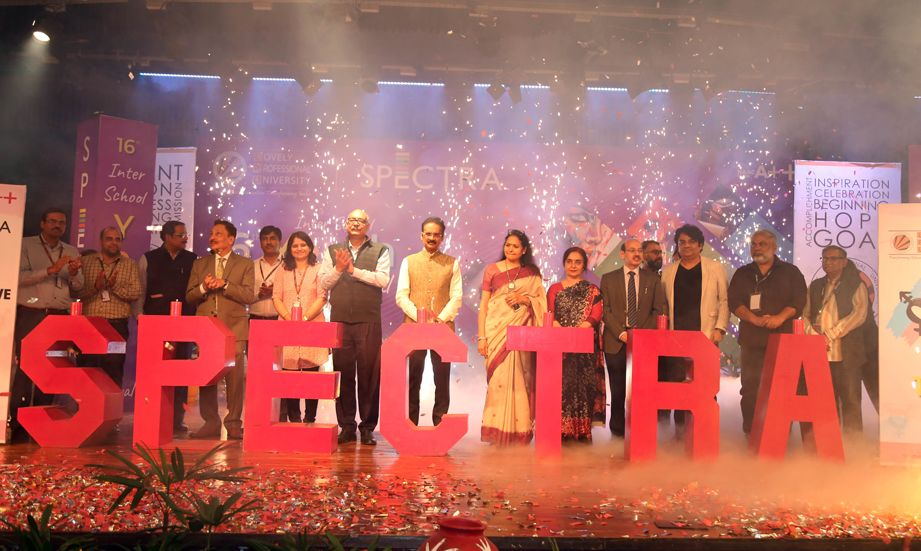
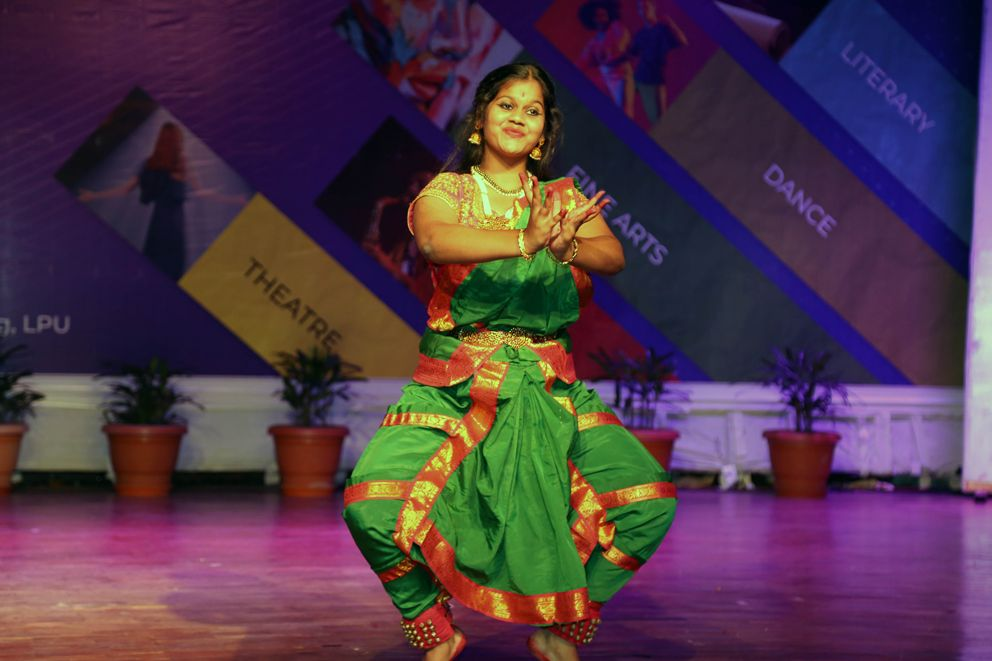
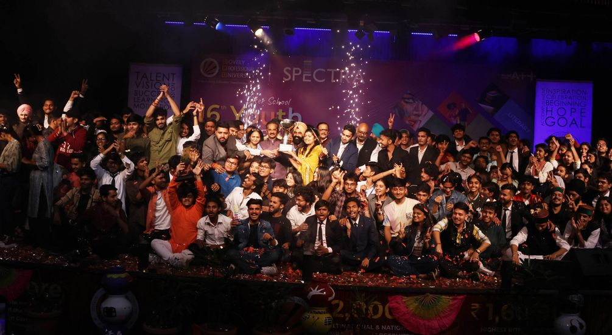
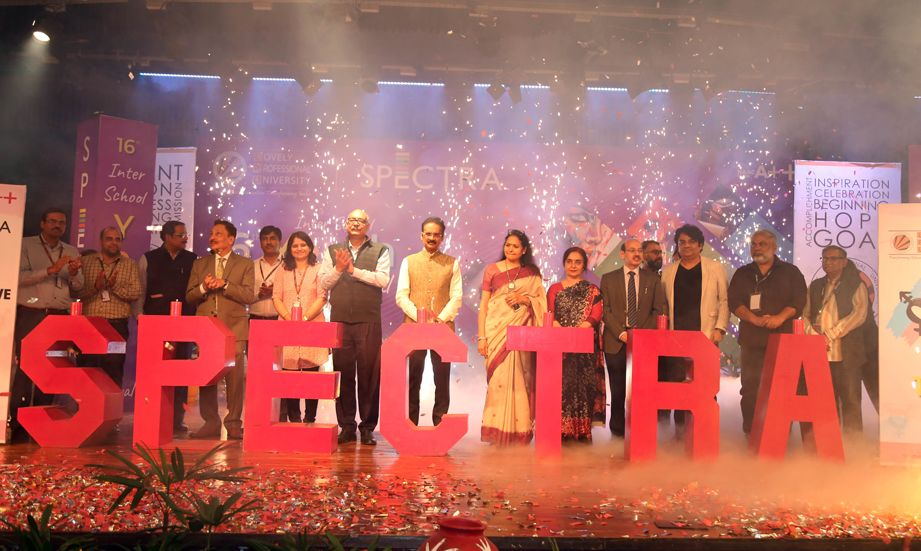
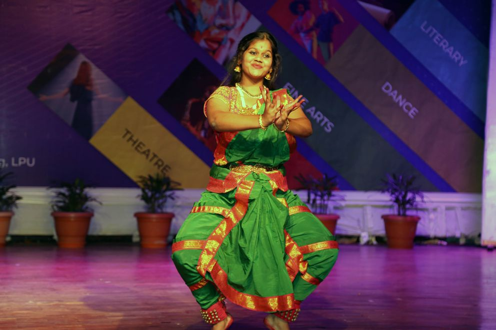
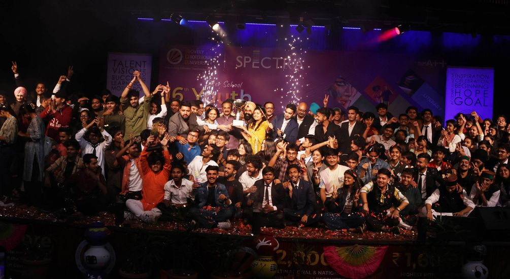
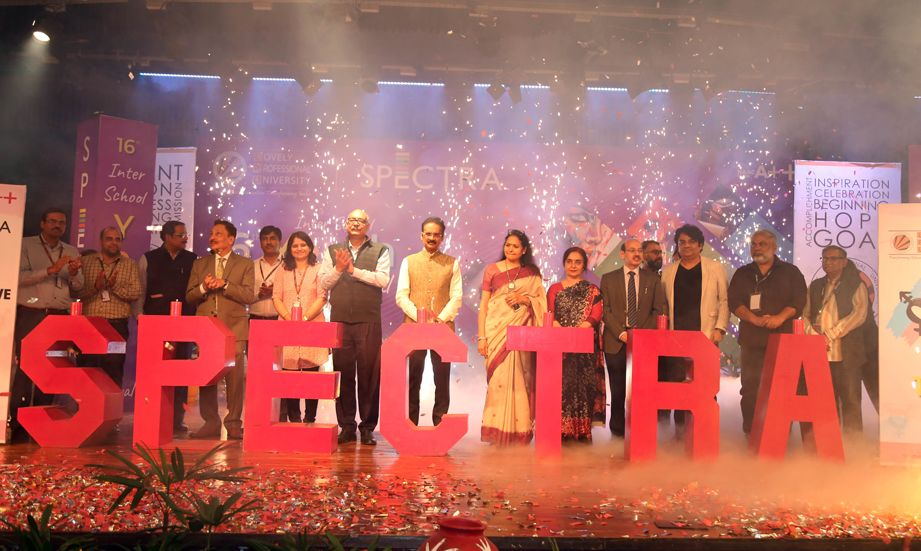
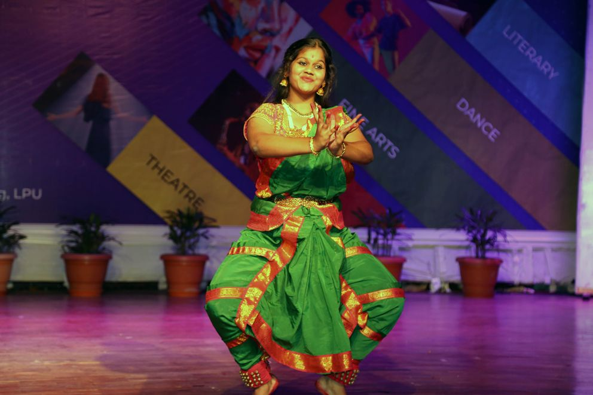
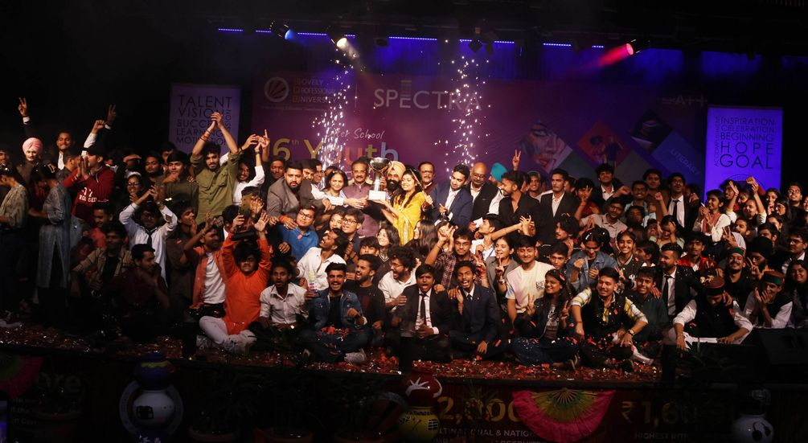
The conference helped mankind to reach the possible solutions to utilize the concept of “Vasudhaiva Kutumbakam”
Aimed to address the issues and challenges of the Earth.
“Work together to inspire people across the globe to make this earth sustainable”: LPU Pro Chancellor Mrs Rashmi Mittal invoked all
Phagwara: The Department of Geography at the School of Liberal and Creative Arts of Lovely Professional University (LPU) organized an international conference in collaboration with National Association of Geographers of India (NAGI). This 7th edition of two-day conference aimed the theme of “Clean Water, Good Health, and Sustainable Cities & Communities (CWGHSCC)”.
25+ eminent speakers from around the globe and nation attended various sessions. The conference was to address the issues and challenges of the Earth, and to help mankind reach the possible solution to utilize the concept of “Vasudhaiva Kutumbakam”.
Chairing the conference, LPU Pro Chancellor Rashmi Mittal congratulated the organizers and participants for working together to inspire people across the globe to make this earth sustainable. She underlined that “this is possible only when all the stakeholders of the developed and developing economies are suitably consulted.”
President NAGI, Prof. B. Hema Malini informed that with this conference, LPU has presented a platform for geographical dialogue, collaborative programs and the exchange of ideas. It encourages the researchers to contribute to areas related to climate change, water resources, food security, sustainability, health, cultures and civilization for human development, disaster management, vulnerability analysis in the context of global change and earth system governance.
Keynote speaker, President Saudi Geographical Society, King Saud University, Riyadh Saudi Arabia; Dr Ali Aldosaari shares that urban agriculture is essential for sustainable development as for food security is concerned. It can be helpful for extensive change in food security issues and land use due to urbanization causes, large-scale damage to agricultural land in the area. In fact, urban agriculture is a fundamental environmental activity to ensure food security by increasing food production for locals and improving urban biodiversity.
The conference made all understand that the United Nations’ SDGs (Sustainable Development Goals) work towards a world of peace- prosperity, eradicating major issues like poverty, hunger, equity, good governance besides protecting the Earth. The sustainable development means developing cities, land, businesses, and communities to meet the needs of the present without affecting future generations’ ability to meet their needs. These goals seek to improve the living conditions for all, without depleting the natural resources.
During different sessions, Senior Geographer Dean, Faculty of Science, University of Rajasthan Prof. H.S Sharma; CSRD, JNU, New Delhi Prof. Padmini Pani; the Editor, Annals of the National Association of Geographers Prof. S.C. Rai; LPU’s Pro Vice Chancellor Dr Sanjay Modi; Dean Dr. Pavitar Parkash Singh; HoD Dr. Manu Sharma also presented their views along with visiting elite geographers. Some of the technical sessions were held on -Sustainable Cities & Communities; Clean Water and Sanitation; Good Health; Sustainable Agriculture and Development.